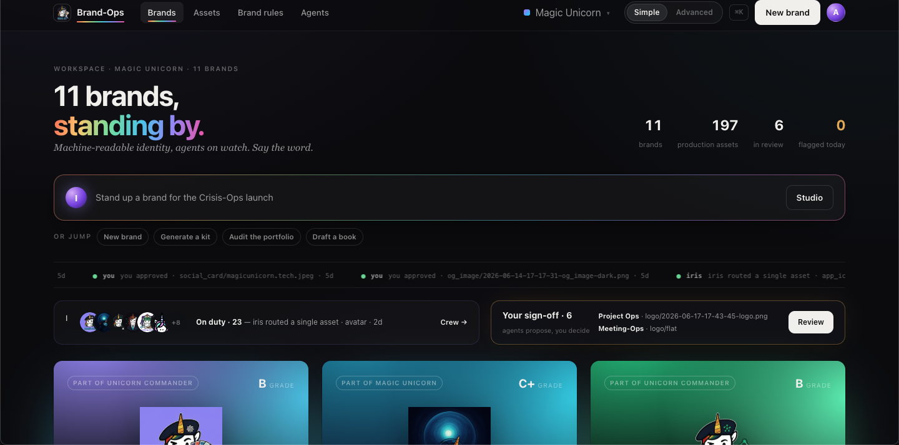
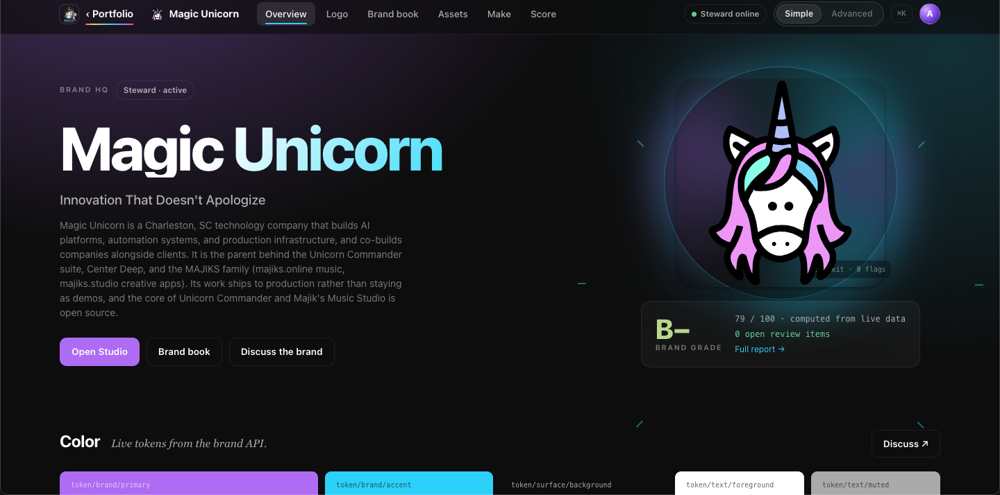
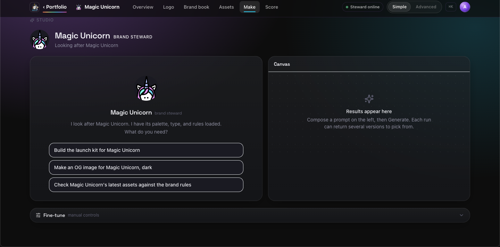
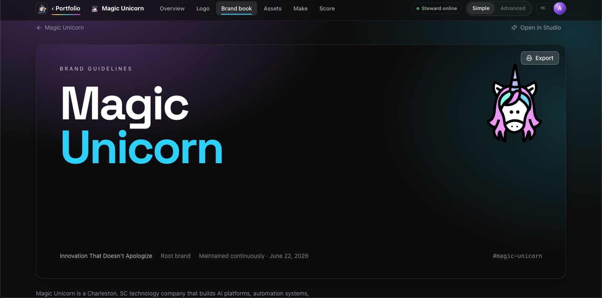
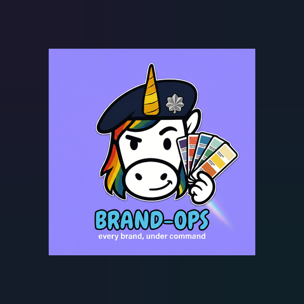

Brand-Ops holds each brand as machine-readable truth: its palette, type, voice, and rules.
Then you or an agent generate on-brand assets against that truth, and grade any asset or line of copy for compliance.
// One engine. A CLI, an MCP server, a REST API, and an agent-first studio over it.
brand-ops

How it works
The brand is the interface, and there are three ways an asset gets made.
Open a brand and the whole surface recolors to it: its palette, its fonts, its mark.
The brand book, the asset kit, the voice, and the agents on watch become one screen, themed to the brand you are in.
Underneath, every asset comes from one of three honest paths.
PATH 01
On-brand marks, reference conditioned
Logos, icons, podcast covers, and avatars are generated through a metered gateway, conditioned on the brand's own reference art so a new mark looks like it belongs to the house.
metered gateway · no provider keys heldPATH 02
Correct-copy cards, composed deterministically
Share images, social cards, and launcher tiles are composited from the brand's real fonts and exact colors. No model writes the text, so the copy is always right and the image is pixel-identical run to run.
1200x630 · 1080x1080 · 512x512PATH 03
Existing assets, brought into the catalog
Already have a logo or a share image on disk? Ingest brings each brand's known assets into the managed catalog so they serve, grade, and live next to anything you generate.
idempotent · catalog sidecar per asset
A brand HQ, themed to itself.
Each brand carries a guidelines document rendered straight from its record: identity, color tokens, typography, voice, asset coverage, and a paste-able link-preview kit. The page wears the brand it describes, so the rules and the work share one surface.

What you get
Built for many brands, many tenants, and agents that do the work.
Multi-tenant isolation
Every tenant is fenced in the database with Postgres row level security and on disk under its own per-workspace subtree. One workspace never sees another's brands or files.
On-brand by reference
Marks are conditioned on the brand's own reference images, so a generated logo or avatar reads as part of the house instead of a stock guess.
Correct copy, every time
Link-preview and social cards are composited deterministically. The headline is set in the brand's real font, so what unfurls on social, iMessage, Slack, and Discord is exact and repeatable.
Agents as a brand's cast
Each brand has a Steward that knows its identity, with Iris directing cross-brand work and intake. Ask in plain language and the asset lands in the catalog with a compliance stamp.
MCP and agent operable
One engine drives a CLI, a REST API, and an MCP server at full parity with the studio. Your own agents can list brands, dry-run a prompt, generate, and grade, all over MCP.
Metered, no keys held
Generation runs through a metered gateway, so usage is measured cleanly and Brand-Ops holds no provider keys in production. Spend and plan caps live upstream in the suite.
Inside Brand-Ops
The studio, the brand book, and the launcher tile.
Real surfaces from the app, each one themed to the brand it is working in.

Studio. Ask the brand's Steward to build the kit, make a card, or grade work. Each run returns several versions to pick from.

Brand book. Guidelines rendered straight from the brand record: identity, tokens, type, voice, and a paste-able link-preview kit.Portfolio. Every brand under command, with coverage, a live activity feed, and the agents on watch.

Launcher tile. The Ops-Center tile is itself a Brand-Ops asset, composed from the mark and palette so the icon is on brand too.
Get started
Bring your brands under command.
Sign in with your suite account to open your workspace. New here? The same button takes you to sign-in, where you can request access and set up a workspace.